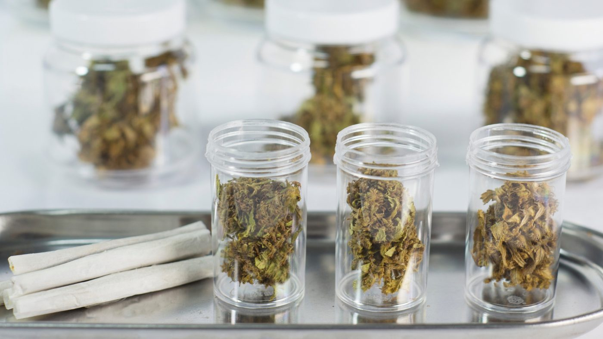

Discover Colorado's Top Dispensaries: A Comprehensive Guide to the Best in the State

The Top Dispensaries in Colorado
LivWell Enlightened Health
LivWell Enlightened Health is a prominent dispensary in Colorado, with several locations throughout the state. LivWell is known for its high-quality product selection, competitive pricing, and friendly staff. They offer both recreational and medicinal cannabis products, as well as accessories and smoking devices.
The Green Solution
The Green Solution is another large dispensary chain in Colorado, with over 20 locations throughout the state. The Green Solution is known for its commitment to providing top-quality products, with a focus on sustainable and organic growing methods. They offer a wide variety of cannabis products, as well as a loyalty program for frequent customers.
Native Roots
Native Roots is a well-known dispensary chain in Colorado, with over 20 locations throughout the state. Native Roots is known for its excellent customer service and knowledgeable staff, who are always available to answer questions and provide guidance on product selection. They offer a wide variety of cannabis products, as well as edibles, tinctures, and topicals.
Terrapin Care Station
Terrapin Care Station is a unique dispensary chain in Colorado, with locations in both urban and rural areas. Terrapin Care Station is known for its commitment to sustainability and environmentally-friendly practices, with a focus on reducing waste and using renewable energy sources. They offer a wide variety of cannabis products, as well as a rewards program for frequent customers.
Lightshade
Lightshade is a popular dispensary chain in Colorado, with several locations throughout the state. Lightshade is known for its high-quality products, competitive pricing, and friendly staff. They offer both recreational and medicinal cannabis products, as well as accessories and smoking devices.
Conclusion
Colorado has a vast array of dispensaries for both recreational and medicinal use, with many different options to choose from. The dispensaries listed above are some of the biggest and most well-known in the state, with a focus on quality products, knowledgeable staff, and excellent customer service. Whether you are a seasoned cannabis user or new to the industry, these dispensaries are sure to provide a unique and enjoyable experience.